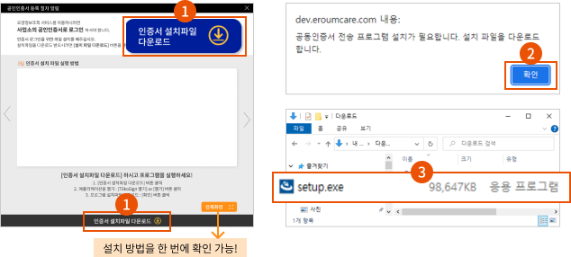
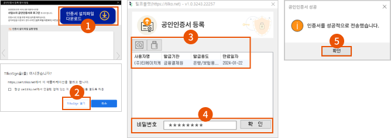
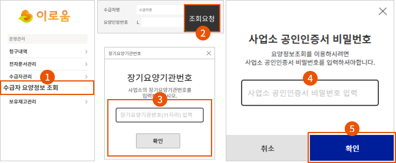

1. 공인인증서 설치파일을 다운로드 후 설치하세요!
[인증서 설치파일 다운로드] 버튼을 클릭하세요.
팝업창이 나타나면 [확인] 버튼을 클릭을 클릭하면 설치파일이 다운로드 됩니다.
다운로드 후 ‘setup.exe’ 설치파일을 더블 클릭합니다.
2. 설치 마법사를 설치 실행하세요!
설치 마법사창이 나오면 그림과 같이 순서대로 진행하세요.
(설치 마법사 화면 : 다음 → ‘사용권 동의’ 선택 → 다음 → 설치 → 마침)

3. 공인인증서를 등록하세요!
사이트 왼쪽 메뉴에서 [수급자관리] [요양정보 조회] 메뉴를 클릭하시면 ‘공인인증서 등록’창이 나타납니다.
[하드디스크] 또는 [USB] 버튼을 클릭하여 공인인증서를 찾은 후 비밀번호를 입력하세요.
인증서 성공 창이 나타나면 [확인] 버튼을 누르세요.

4. 요양 정보를 조회할 수 있습니다!
요양 정보 간편조회 페이지에서 수급자명 또는 요양인정번호를 입력 후 [조회 요청] 버튼을 클릭하세요.
공인인증서를 선택하고 비밀번호를 입력하여 로그인하세요.
공인인증서 로그인으로 간단하게 요양 정보를 조회하실 수 있습니다.